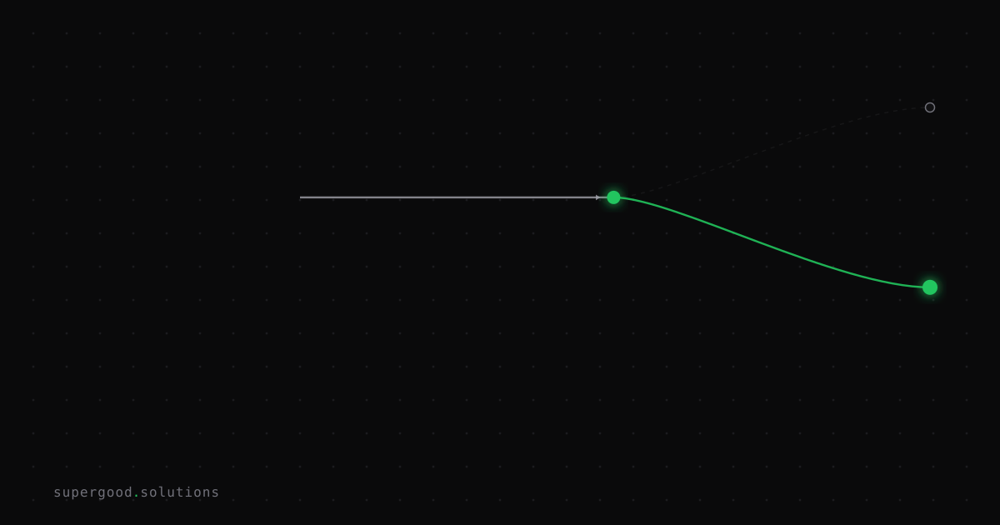

Language Models Don't Understand Physics. That's Half Your Use Cases.
TL;DR: A February 2026 survey of LLM reasoning failures (Song, Han & Goodman) formally separates "embodied" reasoning — the physical, spatial, causal kind — from the language-pattern reasoning models are actually trained on, and finds the embodied category is where failures are most persistent. If your use case touches a warehouse floor, a production line, or a delivery route, you're deploying a language engine into a physics problem, and that mismatch is why manufacturing and logistics AI projects miss their numbers more often than back-office ones.
Key Insight
The industry pitch for LLMs is "general intelligence": one model, any task. The reality is narrower: LLMs are extremely good at next-token prediction over text, which makes them excellent at anything that reduces to language, code, or symbolic pattern-matching, and unreliable at anything that reduces to physical-world state.
The arXiv survey "Large Language Model Reasoning Failures" makes this precise instead of anecdotal. It splits reasoning into embodied and non-embodied types, and further splits non-embodied into informal (intuitive) and formal (logical) reasoning. The point isn't that LLMs fail randomly: it's that failures cluster by category, and embodied reasoning (spatial relationships, physical affordances, real-time state tracking, cause-and-effect in a physical system) is a distinct, harder category that text-trained models were never optimized for. A model can ace a bar exam and still be unable to reliably reason about whether a pallet fits through a doorway.
This is the framework executives are missing when they greenlight AI in physical operations: the question isn't "is this model smart enough," it's "is this task language-shaped or physics-shaped."
Why Teams Miss This
The mistake is treating model capability as a single scalar (GPT-5-class vs. GPT-4-class, bigger vs. smaller) instead of asking what kind of reasoning the task requires.
- Benchmarks reinforce the wrong intuition. Public LLM benchmarks are overwhelmingly language, code, and math tasks: domains where models excel because they're symbolic, not physical. A model topping those leaderboards looks "smarter" in a way that doesn't transfer to tracking inventory state, robotic motion planning, or sensor-fused anomaly detection on a line.
- Demos hide the physical grounding problem. A chatbot demo answering questions about a manufacturing process looks the same whether the model actually understands the physical process or is pattern-matching from training text about similar processes. The gap only shows up in production, when the model has to reason about this specific physical state, not a generic description of one.
- "Add more context" gets treated as the fix. Teams that hit a physical-reasoning wall often respond by stuffing more sensor data or documentation into the prompt, assuming it's a context problem. But the survey's framing suggests it's often architectural: the model's fundamental failure mode on embodied tasks isn't solved by feeding it more text about the physical world, because text-about-physics and physics aren't the same representation.
How to Actually Do It
Sort your AI use cases by reasoning type before you sort them by model tier:
- Classify the task first. Ask: does this task resolve by manipulating language/symbols (drafting, summarizing, classifying, code generation, querying structured data) or by reasoning about physical state (spatial layout, motion, real-time sensor data, mechanical cause-and-effect)? The first category is squarely in LLM strength; the second needs help.
2. Pair the LLM with a system that actually models the physical world. For embodied tasks, don't ask the LLM to reason about physics directly: use it as the language/orchestration layer on top of purpose-built systems: computer vision for spatial state, simulation or digital-twin models for physical prediction, control systems for real-time actuation. The LLM's job becomes translating between human intent and those systems, not doing the physical reasoning itself.
3. Constrain physical-reasoning outputs with verification, not just prompting. If an LLM is going to output anything that touches a physical system (a route, a placement instruction, a torque setting), route that output through a deterministic validator (a physics check, a constraint solver, a simulation replay) before it reaches hardware or a human executor. Treat the LLM's physical suggestions as drafts, not conclusions.
4. Re-audit your existing physical-ops AI projects against this split. For any manufacturing/logistics AI initiative already underway, identify which specific decisions the model is making unsupervised. If those decisions are embodied-reasoning calls (not language calls dressed up as physical ones), that's your highest-risk failure point, not model choice, not prompt engineering.
# Rough shape: LLM as orchestrator, not physical reasoner
def handle_warehouse_task(request):
intent = llm.parse_intent(request) # language reasoning — LLM's strength
plan = digital_twin.simulate(intent) # physical reasoning — purpose-built system
if not physics_validator.check(plan): # deterministic verification
return llm.explain_infeasibility(plan) # back to language reasoning
return planWhat We've Learned
Before approving the next AI pilot in a physical-operations domain, run this filter: list the five decisions the model will make, and mark each one language-shaped or physics-shaped. If more than half are physics-shaped, the feasibility question isn't "which model": it's "what's the non-LLM system doing the physical reasoning, and is the LLM just the interface to it." That reframe changes the vendor questions, the pilot scope, and the failure mode you're actually testing for.
Sources
- Survey formally categorizing embodied vs. non-embodied LLM reasoning failures: Large Language Model Reasoning Failures (arXiv:2602.06176)
- Analysis of why text/cloud-trained foundation models underperform in physical-AI applications: Why Traditional Foundation Models Fail in Physical AI Applications
- Systematic review of LLM adoption patterns and constraints across manufacturing use cases: Large language models in manufacturing: a comprehensive review
Have a specific workflow in mind?
Bring it to a Quick Scan — a live working session where we'll tell you honestly whether it should be an agent, a workflow, or left alone, before you spend a dollar building it. You get 3 prioritized recommendations on the call, a one-page summary after, and the $500 credited toward any engagement within 30 days.
Get new posts + practical agent-ops notes
One email when something new goes up. No nurture sequence, no spam — unsubscribe whenever you want.